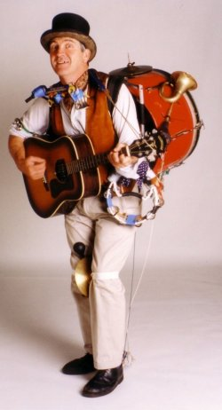

Modularised Personal Devices

So LC, Nixta and Aaron all like the Modu modular phone idea. A tiny cheap phone for evenings out, which slips into its super-blackberry exoskeleton for when you need to get hardcore about your comms.
Sounds great. I can't help but feel it's the first tiny step towards 'modular personal hardware' concept I've been banging on about for years. Think about what's good about this mobu phone, and turn it up to 11:
Your phone should be simply a transmitter and receiver. No screen. No keypad. No memory. It just makes phone calls, *nothing* else. Dirt cheap.
Your mp3 player likewise. No screen. No buttons. It just plays mp3s and produces an audio stream. Dirt cheap.
All those devices never come out of your pocket. If you want to interact with them, you carry ONE screen, ONE keypad control, or whatever. These connect to any of your carried devices, allowing you to control them.
If you're the sort of person who likes a nice screen, then you buy *one* nice screen. No need to also buy a nice screen on your phone and one for your mp3 player and one for your camera, etc etc etc. Same goes for any aspect of any component device, audio, control keypad, or storage, or whatever.
Storage is an illustrative example. Each device has almost no on board storage. Instead, they co-operate to share a single, central bank of storage, also in your pocket. So instead of carrying X gigabytes in each device (like now), you pool all that and carry 5X, shared between all your devices. So each device could still use X gigabytes each, if that was required. But now you also have the option to choose to allocate masses of storage to one single device, for example take four or five times more video than usual, and other devices can just get by with less memory for time being.
I'm tired of buying overpriced devices that bundle in a dozen mediochre implementations of stuff which all my other devices already do. It dilutes competition between hardware providers by forcing all devices to include a lowest common denominator *everything*. Christ, we *have* to put in a fancy graphical user interface and an mp3 player in every phone these days, so everyone puts in crappy ones, just barely adequate. And so when you choose a phone, you are stuck with all the other crap that your phone manufacturer decided to bundle with it. Unbundling this functionality would allow greater competition between device manufacturers. Users could pick and choose components that suit them.
Obviously, many users couldn't be bothered to mix and match, but for them, resellers could assemble pre-selected configurations. No biggie. Competition would still be enhanced, by the resellers choosing the best available component devices. And everything would cost 1/4 what it costs now.
It's the Unix philosophy applied to hardware. Small, sharp, incredibly powerful tools, that each do *one* thing incredibly well, and lean on each other to get things done. This gives users fantastic power to recombine them in manifold creative ways, unanticipated by the original hardware designers.
Welcome to my pipe dream. Everyone I've mentioned it to has called me an idjut. Your turn.
Comments
Comments powered by Disqus